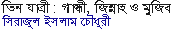
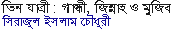

Mukto-Mona Celebrates 5th Anniversary Aroj Ali Matubbor Greeting Messages for 5th Year Anniversary MM Seminar on secularism held successfully in Dhaka Mukto-Mona announces Rationalist Award 2006 ‘Jete Habe Bohu Dure’ Kaberi Gayen After years of growing pain, the forum is in shipshape condition to move forward A.H. Jaffor Ullah 5th Year of Science, Reason & Understanding: Mukto-Mona in Retrospect Jahed Ahmed My experience with Mukto-Mona Nuruzzaman Manik Richard Dawkins Is Science a Religion? Richard Dawkins M D Gopalakrishnan, late Chairman of Emerald Publishers and Editor of The Modern Rationalist Mehul Kamdar Aroj Ali Matubbar- Rationalist Philosopher of Rural BD Dr. Ajoy Roy A Smile of Hope Swapan Biswas Paul Kurtz Letting science answer the question Paul Kurtz Why there is something rather than nothing? Victor Stenger Herr Von Daniken Swapan Biswas James Randi Science Pseudoscience: the Differences James Randi Land reforms dilemma Ilyas Khokhar George Bernard Shaw Standing beneath a shady tree (poem) Sunil Gongopadhaya Translation: A.H. Jaffor Ullah Bertrand Russell Communalism in Undivided Bengal: Shrouding Class Conflict with Religion Taj Hashmi India, a Natural Ally of the United States; a Brief Socio-Political Perspective Sukhamaya Bain Thomas Jefferson Albart Einstein Genesis of Tagore’s Jana Gana Mana Adhinayak and nemesis of related controversies Prof. Asim K. Duttaroy The Invisible “Islamic” Superstate fatemolla David Hume Issac Isimov Humayun Azad Listen to the audio (MP3) (Part: 1 | 2 | 3 | 4 | 5 | 6 | 7 | 8) Prabir Ghosh Taslima Nasrin (Part-1 | Part-2) Abraham Kovoor  Ahmed Sharif Carl Sagan Begum Rokeya (Part: 1 | 2 | 3 | 4 | 5 | 6 | 7 ) Elizabeth Stanton Omar Khayyam
Mukto-Mona Celebrates 5th Anniversary
Aroj Ali Matubbor
Greeting Messages for 5th Year Anniversary
MM Seminar on secularism held successfully in Dhaka
Mukto-Mona announces Rationalist Award 2006
‘Jete Habe Bohu Dure’ Kaberi Gayen
After years of growing pain, the forum is in shipshape condition to move forward A.H. Jaffor Ullah
5th Year of Science, Reason & Understanding: Mukto-Mona in Retrospect Jahed Ahmed
My experience with Mukto-Mona Nuruzzaman Manik
Richard Dawkins
Is Science a Religion? Richard Dawkins
M D Gopalakrishnan, late Chairman of Emerald Publishers and Editor of The Modern Rationalist Mehul Kamdar
Aroj Ali Matubbar- Rationalist Philosopher of Rural BD Dr. Ajoy Roy
A Smile of Hope Swapan Biswas
Paul Kurtz
Letting science answer the question Paul Kurtz
Why there is something rather than nothing? Victor Stenger
Herr Von Daniken Swapan Biswas
James Randi
Science Pseudoscience: the Differences James Randi
Land reforms dilemma Ilyas Khokhar
George Bernard Shaw
Standing beneath a shady tree (poem) Sunil Gongopadhaya Translation: A.H. Jaffor Ullah
Bertrand Russell
Communalism in Undivided Bengal: Shrouding Class Conflict with Religion Taj Hashmi
India, a Natural Ally of the United States; a Brief Socio-Political Perspective Sukhamaya Bain
Thomas Jefferson
Albart Einstein
Genesis of Tagore’s Jana Gana Mana Adhinayak and nemesis of related controversies Prof. Asim K. Duttaroy
The Invisible “Islamic” Superstate fatemolla
David Hume
(Part: 1 | 2 | 3 | 4 | 5 | 6 | 7 | 8)
Taslima Nasrin

A
Carl Sagan
Begum Rokeya
(Part: 1 | 2 | 3 | 4 | 5 | 6 | 7 )